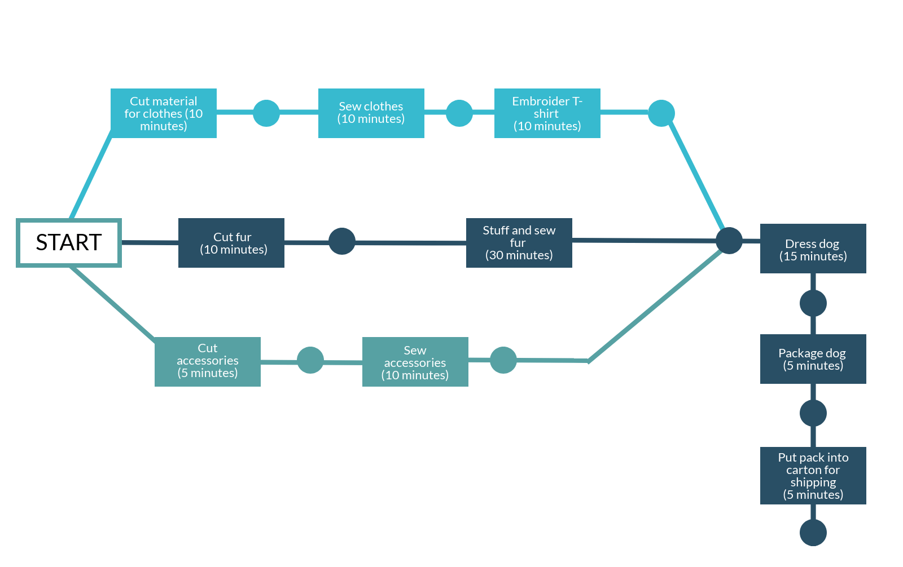

3 PERT diagram
Another project management tool is a PERT diagram, which stands for Programme Evaluation Review Technique. This chart is a graphic representation of the project’s schedule and it is used to schedule, organise and co-ordinate tasks within the project. It was developed in the 1950s by the US Navy to manage the Polaris submarine, an extremely complex project.
A PERT diagram usually shows:
- the sequence of tasks and milestones
- how these are prioritised
- a three-point estimation technique that shows the duration of each task as being ‘optimistic’, ‘pessimistic’ or ‘most likely’.
The main feature of a PERT diagram that is made using software, is that you can see the instant calculation of timelines with every change in the workflow. The project manager can instantly see how one changed timescale affects other parts of the project. Its main benefit is to have an overall view of the whole project, rather than individual details, showing how parts of the project can move and impact each other.
Below is a simple PERT diagram about making and packing a toy dog that has a customised T-shirt.
